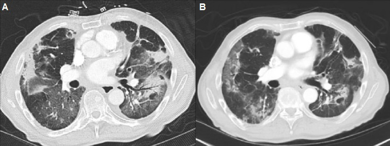
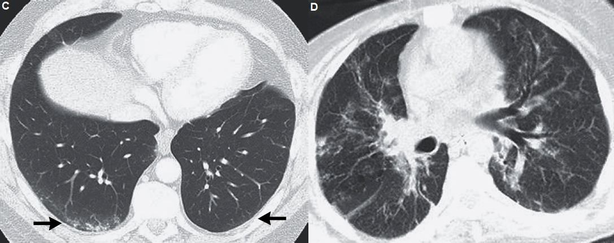

ICO 24h
MÓDULO 5 : Urgencias relacionadas con la inmunoterapia oncológica
Los grado 2, 3 y 4 siempre requieren de visita y realización de exploraciones complementarias (analítica completa, coprocultivos, y a menudo, colonoscopia), por lo que se derivarán para visita médica urgente.
De todas formas, es importante recordar que en todos los grados, incluso los leves, interesa contactar con el equipo de referencia para informar de la aparición de la toxicidad. Habrá que valorar la necesidad de interrumpir la inmunoterapia.
5.3 Neumonitis inmunomediada
5.3.1 Definición y sospecha clínica
Si bien la neumonitis es mucho menos frecuente que la colitis, es un motivo frecuente de consulta en Urgencias y representa una complicación potencialmente mortal, por lo que es importante la detección precoz para optimizar el tratamiento específico desde el inicio de los síntomas. El momento de aparición es bastante más tardío que otros irAEs, habitualmente varios meses después de iniciado el tratamiento.
La incidencia reportada recientemente es menor al 10% en la población global de pacientes, pero puede llegar hasta el 19% en pacientes con cáncer de pulmón. Es de especial interés el hecho de haber recibido radioterapia a nivel del tórax, pues este antecedente aumenta el riesgo de presentar neumonitis inmunoinducida.
Presentación clínico-patológica :
-
Síntomas más frecuentes : muchos pacientes cursan con neumonitis asintomática o con síntomas muy leves e inespecíficos, diagnosticándose la neumonitis en una prueba de imagen de control.
En pacientes con cáncer de pulmón o metástasis pulmonares, suele ser más difícil atribuir la aparición de síntomas respiratorios al efecto adverso de los fármacos. Siempre se debe descartar antes otras posibles complicaciones (infección, TEP, progresión de la enfermedad tumoral). - Hallazgos radiológicos :
| Síntomas más frecuentes | Disnea, tos (seca o húmeda) |
| Síntomas menos frecuentes | fiebre, dolor torácico |
| Complicaciones agudas | hipoxemia, insuficiencia respiratoria |
 